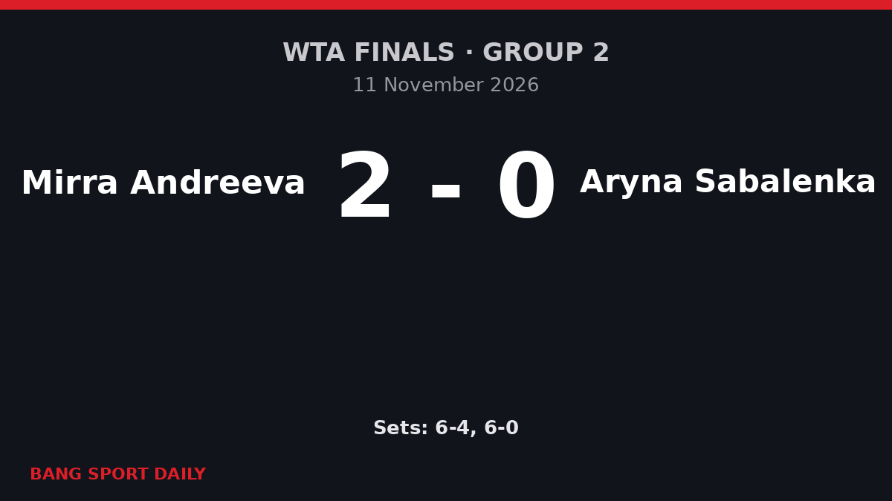

Андреева выиграла 11 геймов подряд, обыграла Соболенко и вышла в полуфинал Итогового турнира WTA
19-летняя теннисистка победила 6:4, 6:0 в Индиан-Уэллсе и заняла первое место в группе 2 на своём дебютном Итоговом турнире — впервые с 2016 года, когда это удалось Светлане Кузнецовой, россиянка вышла из группы.

Что произошло
В среду, 11 ноября 2026 года, на Итоговом турнире WTA в Индиан-Уэллсе Мирра Андреева обыграла Арину Соболенко со счётом 6:4, 6:0 и обеспечила себе место в полуфинале. Вторая ракетка мира Соболенко вела в первом сете 4:1 с брейком. После этого Андреева выиграла 11 геймов подряд, а во втором сете взяла все три гейма Соболенко на её подаче.
Это вторая победа 19-летней теннисистки в двух матчах группы 2. На старте турнира она с тем же счётом, 6:4, 6:0, обыграла Элину Свитолину и пока не проиграла ни одного сета. «Я даже счастливее, чем после первого матча», — сказала Андреева в интервью на корте.

Почему об этом говорят
Андреева, третья ракетка мира и чемпионка «Ролан Гаррос», впервые играет на Итоговом турнире. Она стала первой с 2016 года россиянкой, вышедшей из группы, — тогда в Сингапуре это удалось Светлане Кузнецовой, — и самой юной полуфиналисткой турнира со времён Каролины Возняцки в 2009 году. Впечатляет и сам счёт против соперницы, стоящей в рейтинге на строчку выше: после 4:1 Соболенко выиграла лишь 10 из последних 55 розыгрышей.
Ключевые факты и цифры
- Счёт: Андреева — Соболенко 6:4, 6:0.
- Серия: 11 геймов подряд — с 1:4 в первом сете до конца матча.
- В группе 2: две победы без потерянных сетов — над Свитолиной и Соболенко.
- Формат: восемь теннисисток в двух группах по четыре; в полуфинал выходят по две лучшие из каждой группы.

Что дальше
Андреева уже обеспечила себе первое место в группе 2 и в последнем матче группового этапа в пятницу сыграет с Каролиной Муховой, которая уже не может выйти в полуфинал. В тот же день Соболенко и Свитолина разыграют второе место в группе; в среду Свитолина обыграла Мухову 3:6, 6:2, 6:2. Полуфиналы пройдут в субботу, турнир завершится 15 ноября.